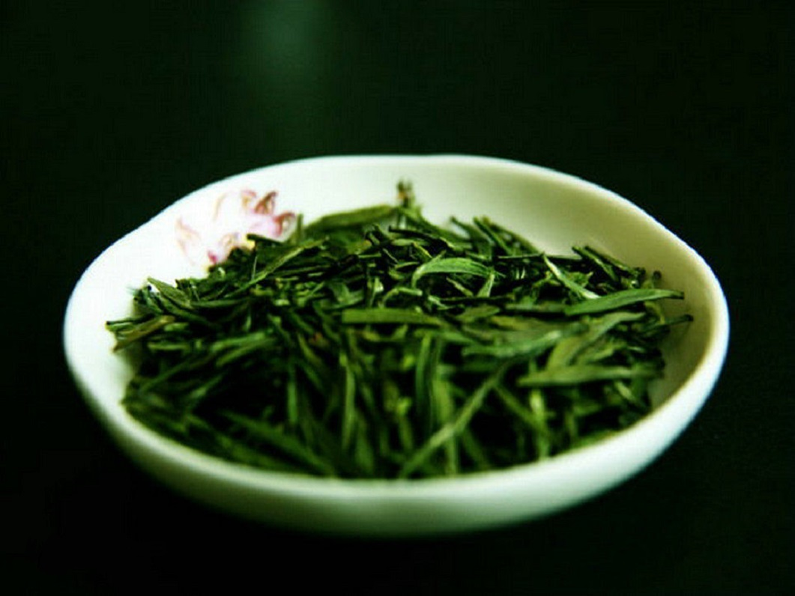
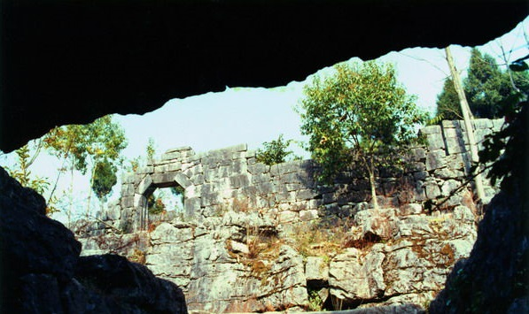
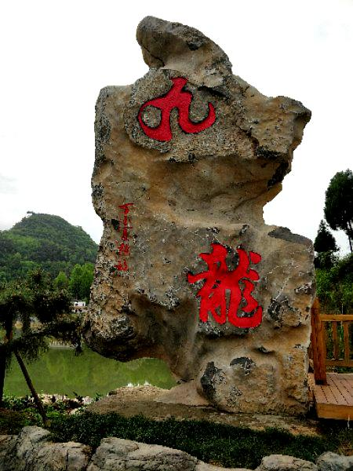

凤冈旅游网
地方频道
走进凤冈
旅游资讯
游记攻略
专题
锌硒茶乡，最美凤冈
凤冈县，贵州省遵义市辖县，位于贵州东北部， 周边
与思南、湄潭、务川等七县接壤,北靠大娄山，南及乌江水...
县境内自然人文景观有陆生植物化石黔羽枝、玛瑙山“古军事洞堡”、明代摩崖石刻“夜郎古甸”、 中华山“万古徽猷”，有中国西部茶海森林公园、九道拐十里长河、万佛峡谷以及民间傩戏、花戏等。
开始
了解更多
出游攻略

茶海之心景区
凤冈富锌富硒茶采用生态建园模式，形成了林中有茶、茶中有树、林茶相间的特色茶园。

玛瑙山营盘遗址
相传始建于南宋末，1855年重建。平面布局呈不规则多边形。

九龙景区
洞外高湖绿无边，回望临江说变迁。
在路上遇见最真实的自己
只想进行一场漫无目的的旅行，在一个有花有海、安静缓慢的地方晒着太阳无所事事
真武山
古建筑依山取势，错落有势；且屹立岷江岸畔，四周古木参天，诗情画意，宛若仙境。
太极洞
太极洞古名颇多，或称太极真境，或称广德埋藏，或称长乐洞。
万佛峡谷
岩间古木参天，林中百花争艳，终年幽静宜人，即使是炎炎苦夏，也是清凉利爽。
凤冈的详细地址？
锌硒茶乡，最美凤冈。
凤冈县属中亚热带湿润季风气候区，夏无酷署，冬无严寒，雨量充沛，热量丰富，雨热同季，四季分明， 立体气候明显。年均气温15.2℃，森林覆盖率达62%，冬无严寒，夏无酷暑。
共在一片蓝天下，让我们采取新行动保护和净化我们的地球。
加入我们
您应该知道的凤冈美食
每个城市都有不一样的街景，不一样的美食,吃是为了生存， 所以吃货只是求生欲望特别强烈的人而已。提起一座城市。只想到那儿的美食。这就是吃货旅行的意义。
吃货专场
凤冈养生油茶
凤冈县古有“夜郎古地”之称，追根溯源，凤冈养生油茶是传承了唐宋时代的煮茶遗风， 凤冈土家人至今仍有“一日不喝油茶汤，干起事来心发慌”的传统，油茶是凤冈土家人世代传承的饮食习俗。
了解更多
绿豆粉
凤冈绿豆粉是当地民间最受百姓喜爱的小吃之一。在凤冈县的农村，每逢春节，村村寨寨、家家户户都要 做粑粑推绿豆粉，万户一片磨浆声，把新年的气氛烘托得浓浓的。软而绵扎，又香又好吃，味道独特。
了解更多
青糖凉虾
群山环绕、曲水流觞的黔北古镇琊川镇，每逢夏天，乡场上都会有人沿街叫买：凉虾、凉虾、青糖凉虾， 二块钱一碗，不冰不要钱。青糖凉虾这一牙缝里的风俗饮食为“舌尖上的中国”增添了一道美食佐餐。
了解更多